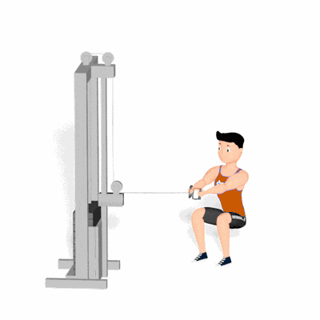

Agachamento com Remada na Polia

Exercício combinado que fortalece pernas, glúteos e dorsais, unindo agachamento com remada. Indicado para ganhos de força, coordenação e resistência muscular.
Ficha Técnica
Tipo: Musculação
Grupo Muscular: Corpo
Aparelho: Nenhum
Músculos: Nenhum
Como realizar
- Posicione-se em frente à polia baixa e segure a barra ou alça com as duas mãos;
- Fique em pé com pés afastados na largura dos ombros;
- Inspire e realize o movimento de agachamento, flexionando os joelhos e mantendo o tronco ereto;
- Ao retornar, execute a remada puxando a alça em direção ao abdome, retraindo as escápulas;
- Expire e retorne lentamente à posição inicial, repetindo o movimento.
 RC STORE
RC STORE